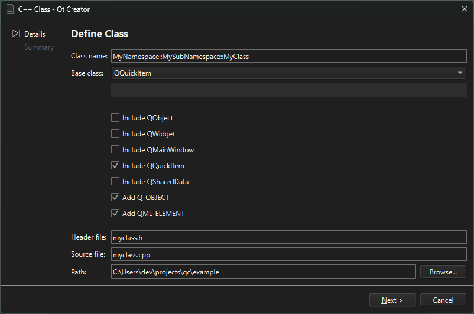

Create C++ classes
To create a C++ header and source file for a new class that you can add to a C++ project:
- Select File > New File > C/C++ > C++ Class > Choose.
- Specify the class name, base class, and header and source files for the class.

The wizard supports namespaces. To use a namespace, enter a qualified class name in the Class name field. For example: MyNamespace::MySubNamespace::MyClass. The wizard suggests existing namespaces and class names as you type.
You can also create your own project and class wizards.
See also Create files, Set C++ file naming preferences, Use project wizards, and Custom Wizards.